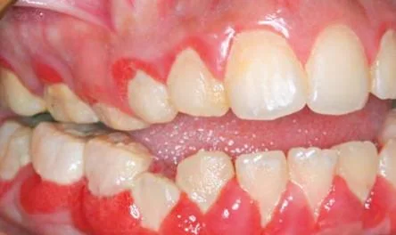

نسخه استخراجشده؛ ترجمه یا تأیید علمی انجام نشده است. وضعیت: captured
طبقهبندی ۲۰۱۷ برای نخستین بار تعریف عددی و روشنی از ژنژیویت داد. معیار، درصد نقاط خونریزیدهنده (BOP) است:
| وضعیت | درصد BOP |
|---|---|
| سلامت لثه | کمتر از ۱۰ درصد |
| ژنژیویت موضعی | ۱۰ تا ۳۰ درصد |
| ژنژیویت منتشر | بیش از ۳۰ درصد |
🔑 شرط بنیادی: در ژنژیویت هیچ از دست رفتن چسبندگی وجود ندارد (یا در بیمار درمانشده، CAL پایدار است). به محض اینکه CAL از دست برود، دیگر ژنژیویت نیست.
⚠️ توجه: پاکت با عمق افزایشیافته میتواند در ژنژیویت وجود داشته باشد، اما این پاکت کاذب است — حاصل تورم لثه، نه از دست رفتن چسبندگی.
| ویژگی | سالم | ژنژیویت |
|---|---|---|
| رنگ | صورتی مرجانی | قرمز تا قرمز مایل به آبی |
| شکل | لبه نازک و تیز، پاپیلای نوکتیز | لبه گرد و متورم، پاپیلای برجسته |
| قوام | سفت و محکم | نرم و متورم (ادماتوز) یا سفت (فیبروتیک) |
| استیپلینگ | موجود | از بین میرود |
| خونریزی | ندارد | هنگام پروب یا مسواک |
| درد | ندارد | معمولاً ندارد |
⚠️ نکته بالینی مهم: نبود درد دلیل اصلی است که بیماران ژنژیویت را جدی نمیگیرند. خونریزی هنگام مسواک زدن، نخستین و اغلب تنها شکایت بیمار است — و بسیاری آن را طبیعی میپندارند.

📌 در ژنژیویت با قوام فیبروتیک (مثلاً در تنفس دهانی مزمن)، لثه ممکن است سفت و کمرنگ بهنظر برسد در حالی که التهاب برقرار است؛ به BOP تکیه کن نه فقط به ظاهر.
ویژگی تعیینکننده ژنژیویت این است که با حذف پلاک، بافت بهطور کامل به سلامت بازمیگردد — بدون هیچ آسیب دائمی. همین ویژگی است که آن را از پریودنتیت جدا میکند.
| وضعیت | CAL | BOP | نام درست |
|---|---|---|---|
| پریودنشیوم دستنخورده | طبیعی | بیش از ۱۰٪ | ژنژیویت |
| بیمار پریودنتیت درمانشده | کاهشیافته اما پایدار | بیش از ۱۰٪ | التهاب لثه روی پریودنشیوم کاهشیافته |
| بیمار پریودنتیت | در حال از دست رفتن | مثبت | پریودنتیت |
🔑 نکته حیاتی: بیمار پریودنتیت درمانشده که BOP دارد اما CAL پایدار است، عود پریودنتیت ندارد؛ او «التهاب لثه روی پریودنشیوم کاهشیافته» دارد. اما چون سابقه پریودنتیت دارد، همیشه بیمار پریودنتیت باقی میماند و در گروه پرخطر پایش میشود.
هر پریودنتیتی از ژنژیویت آغاز شده است، اما هر ژنژیویتی به پریودنتیت تبدیل نمیشود. ژنژیویت شرط لازم است، نه کافی.
⚠️ اشتباه رایج ۱: ژنژیویت کاملاً برگشتپذیر است؛ پریودنتیت نه.
⚠️ اشتباه رایج ۲: پاکت در ژنژیویت کاذب است.
⚠️ اشتباه رایج ۳: BOP در بیمار درمانشده با CAL پایدار، عود پریودنتیت نیست.